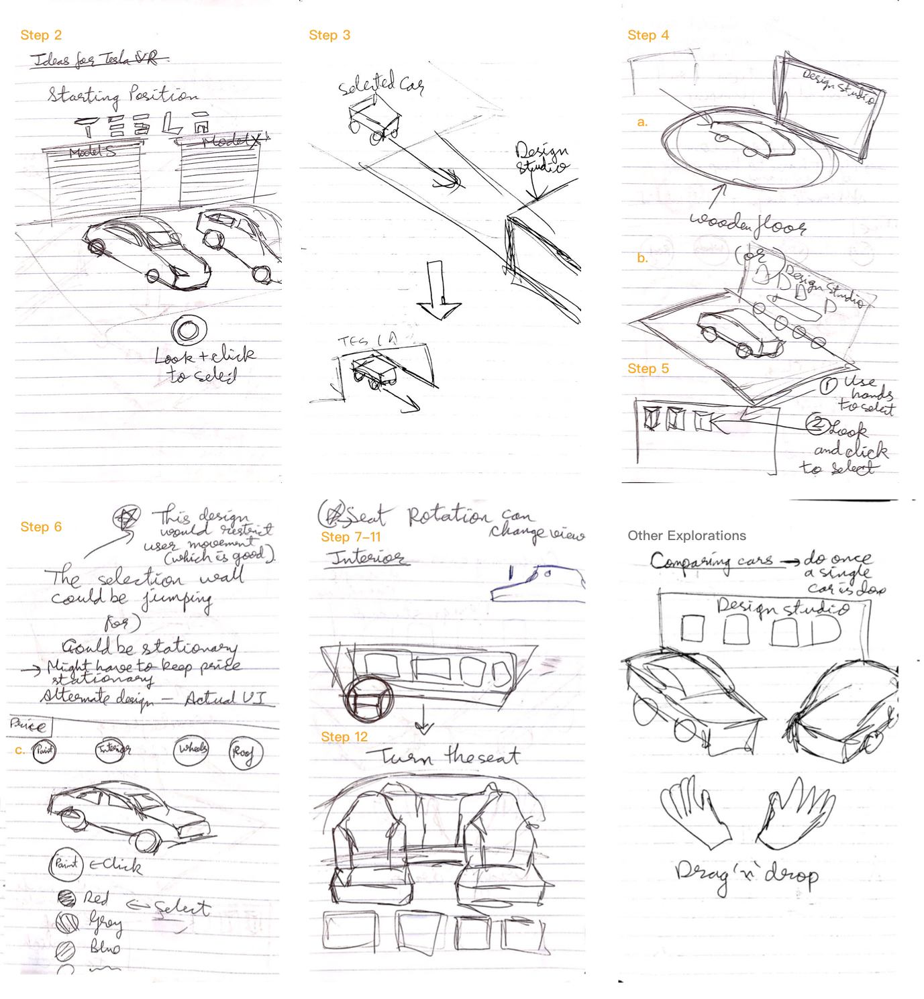
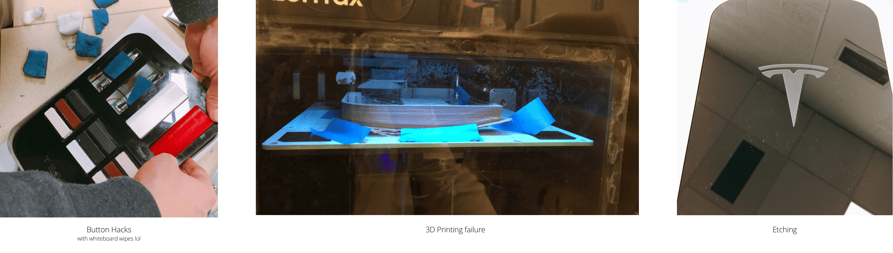
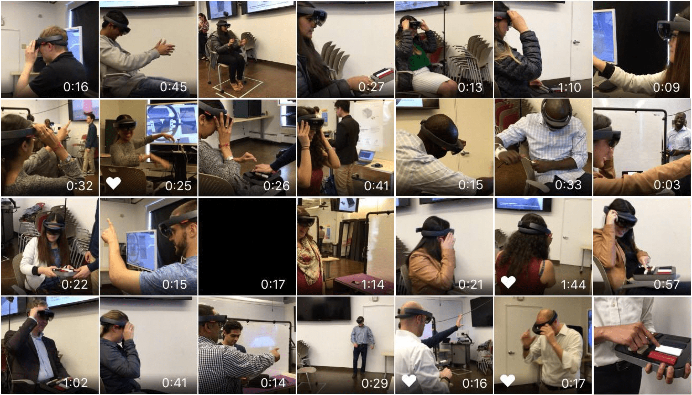

IoT + AR
Project Aether

Project Aether is a side project I did at CMU with my classmate Hardik Patel. We are very interested in designing for AR but neither of us are familiar with developing for it and this motivated us to learn by doing a side project.
Learning Unity, C# scripting, while designing, prototyping and fabricating, we were able to create an enhanced car buying experience using HoloLens and Aether Pad to help customers better visualize the available options and features in the car in 5 weeks' time.
My Role
Designer + Prototyper + Programmer
Team
Project done with Hardik Patel
Sprint 1
Sketching and Ideation
We started from sketching out the experience in a storyboard and went on building a minimal scene in Unity. At first we did not have a HoloLens device so we pivoted to design in Virtual Reality to simulate the experience.
Below is our original sketch of the main flow of the VR experience. The detailed product specifications document can be found here.
In a VR setting, we want the scene to be more dynamic and be completely different from what you have in a showrroom. So we added dynamics like animation for the car entering the stage. Below is a recording of the VR scene from Unity.
Sprint 2
Moving to AR
In order to convey our concept better, I believed in the importance to develop this in AR and we were lucky enough to be able to borrow a HoloLens from the Emirates Lab in Silicon Valley campus. So we finally shifted the experience to the right platform.
To achieve our objective to help customers better visualize the options they have, we decided to map an Augmented Reality mesh on the static car in the showroom as an overlay. The mesh should act accordingly to the dynamics of the car (e.g. door open, door close, movement). There are two ways to do it:
1. Use the spatial mapping technic of HoloLens to build a mesh of the car and add texture to it.
2. Build a mesh and tries to map it onto the position of the car. By using different kinds of sensor on the car, we will be able to know the status of the car e.g. if the door is being open, if the car is moving (which is very not likely), and move the car mesh accordingly.
The spacial mapping technology is not stable enough and the mesh detected is far from acceptable so we crossed out option 1 and decided to use option 2.
Sprint 3
Prototyping and Testing
We tested several rounds while gradually prototyping, and the design evolves along the way.
Phase 1: On screen testing
In this phase, we prototyped and tested the door open/close and color changing feature on screen.
The challenge we have here is communicating between HoloLens and the physical car(sensors). Here are two tutorials I wrote on the communication part.
1. Using Serial Monitor to stream data
2. Using HoloLens as an Internet Server Client
We use conductive ink paint on the door handle to sense if the door was being opened/closed and this movement will be communicated to the digital world, causing the door in the hologram to open/close accrodingly.
Phase 2: HoloLens with gesture input
In this phase, we implemented gesture input (airtap). By tapping on the design studio wall, you can choose the options and see the choice being reflected on the car.
During testing, we found it can be very hard to map the mesh to the exact size and position it accordingly in the room. To solve this problem we designed a drag and resize feature for the showroom people to quickly set it up according to the car position in the room. We have a physical lock on the aether pad that locks this feature so the showroom specialist can lock it after finished setting up.
Phase 3: HoloLens with gesture and tangible input
During this phase, we fabricated the aether pad using laser cutting, 3D printing and physical computing. Here are some sucess and failures during prototyping.
This phase is when we did the majority of the testing. The problem we found here is that it is great to have the pad in hand when people are outside the car, since it gives them a selection of physical choices lining up in their hand. But when they get inside the car, the physical input might not be the best way.
Phase 4: Hololens with gesture, tangible and voice input
Thus, we did not stop here. We went on designing for the tesla screen inside the car. Taking advantage of the existing screen, the user can be freed from the aether pad and will be able to feel the texture of the inside of the car, and also get to tryout the digital screen.
Voice input is also implemented, providing a completely hands free experience. Voice input is being handled by speech Recognition API from windows 10.
Watch AETHER in action:
Feedbacks
Takeaways
We got a lot compliments for this project from professors. One of our professors in Silicon Valley showed our demo to former Tesla CIO Jay Vijayan and he liked it enough to offer us full time positions.
However, it is still a very rough work and we did not have time to work on the craft. If I have more time, I would work on the transition of options changing to make it a more playful experience.
Furthermore, the view point of HoloLens is not as big as we imagined, so if similar implementations works better on smaller objects, like changing colors for a notebook, but does not work as good for large scale objects.